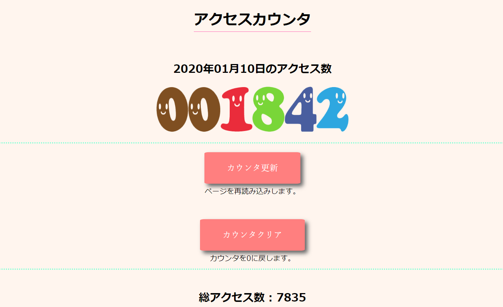
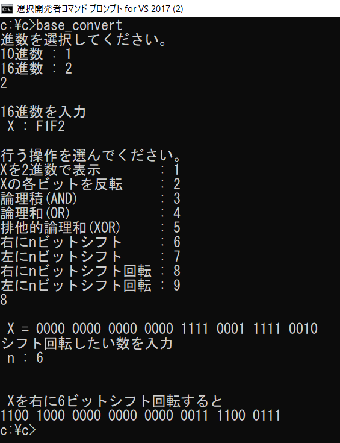
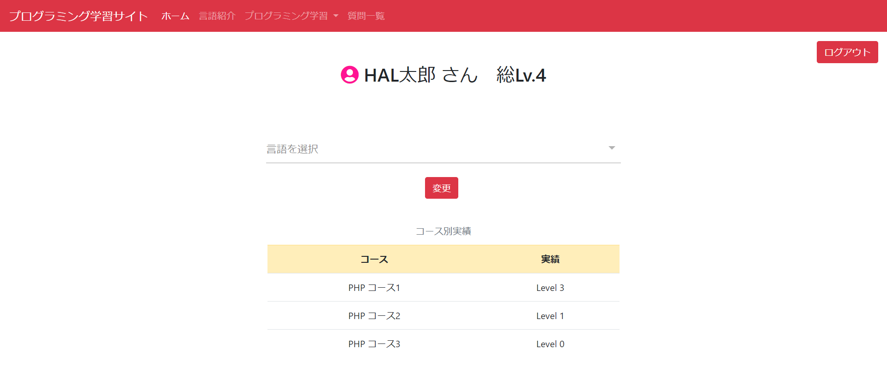

About

名前 : 山本一樹
生年月日 : 2000年7月15日
希望職種 : WEBエンジニア
スキル : PHP MySQL C言語 HTML CSS JavaScript
勉強中 : Laravel
経歴 :
鳥取県米子市出身。
2016年4月、国立米子工業高等専門学校電子制御工学科へ
入学。C言語、アセンブラ(CASL II)、マイコン(Arduino)
電気・電子回路などについて学んだ。
2019年3月、国立米子工業高等専門学校電子制御工学科を
中途退学。
2019年4月、WEBエンジニアを目指し専門学校HAL名古屋
WEB学科へ入学。
現在はバックエンドエンジニアを目指してPHP、Laravel
を勉強中。
Works
作品1 : グラフィカルアクセスカウンタ

ページが更新される度にアクセス数がカウントされるwebシステムです。
日付が変わる、またはカウンタクリアボタンが押されると、アクセス数が
リセットされます。総アクセス数はリセットされません。
作品2 : BBS

ログイン機能搭載の、電子掲示板です。
一度ログインするとセッションに記録されるので、ログアウト前であれば
同じブラウザ内でログイン状態が保持されます。
スレッドを選択すると、そのスレッドに投稿された内容が表示されます。
既存のスレッドに投稿する、または新規スレッドを立てることができます。
投稿内容は下書きに保存でき、後から読み込むことができます。
投稿時に削除/更新キーを設定し、そのキーを使うと投稿した内容を削除・更新
することが可能です。
作品3 : 進数変換&ビット演算システム

10または16進数を2進数に変換するシステムです。
高専時代に学んだことを活かし、C言語で制作しました。
入力したものを2進数で表示し、論理演算やビットシフト、
シフト回転をすることが可能です。
作品4 : プログラミング学習サービス

ログイン機能搭載の、電子掲示板です。
一度ログインするとセッションに記録されるので、ログアウト前であれば
同じブラウザ内でログイン状態が保持されます。
スレッドを選択すると、そのスレッドに投稿された内容が表示されます。
既存のスレッドに投稿する、または新規スレッドを立てることができます。
投稿内容は下書きに保存でき、後から読み込むことができます。
投稿時に削除/更新キーを設定し、そのキーを使うと投稿した内容を削除・更新
することが可能です。